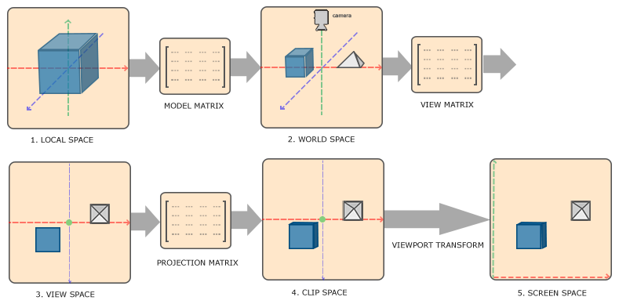

Shader variables¶
NotITG automatically passes some useful uniform variables into your custom shader programs. The default vertex shader also passes some useful varying variables into the fragment shader. These variables are listed below.
Varyings¶
varying vec3 position;
varying vec3 normal;
varying vec4 color;
varying vec2 textureCoord;
varying vec2 imageCoord;
position: The position of this point in local space.normal: The normal vector at this point, in view space. Not normalized.color: The vertex color, often set viaActor.diffuse()and friends.textureCoord: The texture coordinates at this point. These coordinates are suitable for plugging intotexture2D()directly. For more info, see Texture padding.imageCoord: The image coordinates at this point. For more info, see Texture padding.
Uniforms¶
uniform float time;
uniform float beat;
uniform vec2 resolution;
uniform vec2 textureSize;
uniform vec2 imageSize;
uniform mat4 modelMatrix;
uniform mat4 viewMatrix;
uniform mat4 projectionMatrix;
uniform mat4 textureMatrix;
uniform sampler2D sampler0;
uniform sampler2D sampler1;
uniform bool isEnvMap;
time: The time into the song, in seconds.beat: The time into the chart, in beats.resolution: The resolution of the screen. You can think of it asvec2(SCREEN_WIDTH, SCREEN_HEIGHT).textureSize: (not available in model shaders) The size of the actor's main texture. For more info, see Texture padding.imageSize: (not available in model shaders) The actual size of the image contained within the actor's main texture. For more info, see Texture padding.modelMatrix: The actor's model matrix. See the section regarding transformation matrices.viewMatrix: The actor's view matrix. See the section regarding transformation matrices.projectionMatrix: The actor's projection matrix. See the section regarding transformation matrices.textureMatrix: Matrix that transforms texture coordinates before they are passed to the fragment shader.sampler0: The actor's main texture.sampler1: (model shaders only) The texture loaded in a model's alphamap slot.isEnvMap1: (model shaders only) True if the textures loaded with the model are sphere maps (?). Specifically, this is true whenever a sphere map is loaded in the color map or alphamap slot, except in the case where a sphere map is in the color map slot and a non-sphere-map texture is in the alphamap slot.
Additional playfield shader uniforms¶
The game passes some additional uniforms into playfield shaders:
uniform int iCol;
uniform int iPlayfield;
uniform int isHold;
uniform int isReceptor;
uniform float fYOffset;
uniform float fNoteBeat;
iCol: The playfield column (0-indexed).iPlayfield: The playfield number (0-7 for P1-P8).isHold: 1 for holds, 0 for all else.isReceptor: 1 for receptors, 0 for all else.fYOffset: (arrow shaders only) The y-offset of the arrow along the arrow path, in "pixels". Beware that the location of the zero point is affected by mods and is not usually located at the receptors.fNoteBeat: (arrow and hold shaders only) Which beat the arrow lies on. For holds, which beat the hold starts on.
Regarding transformation matrices¶
 Adapted from LearnOpenGL - Coordinate Systems by Joey de Vries, licensed under CC BY 4.0
In most 3D games, vertex coordinates are transformed to a series of coordinate systems in order to determine where vertices should end up on screen. These coordinate systems include the following:
- Local space specifies coordinates relative to the object's origin, before any transformations are applied to the object.
- World space specifies coordinates relative to the world's origin.
- View space specifies coordinates relative to the camera's point of view.
- Clip space specifies coordinates in terms of the screen/viewport, kind of. Specifically, in clip space, points with coordinates between -1 and 1 will be visible on screen, and points outside this range will be clipped (discarded).
These transformations are performed via a bunch of linear algebra, utilizing a series of transformation matrices that describe the transformations taking place:
- The model matrix transforms local space to world space, essentially positioning and transforming the object to its place in the world.
- The view matrix transforms world space to view space. You can think of it as positioning the camera in the world, though it's really more like transforming the whole world to move stuff into the camera's view.
- The projection matrix transforms view space to clip space. Taking the effects of perspective into account, it projects all coordinates that the camera can see (those within the camera's view frustum) into a box between (-1, -1, -1) and (1, 1, 1) so these coordinates can be easily clipped.
The modelMatrix, viewMatrix, and projectionMatrix uniforms that NotITG uses work pretty much like this, though some aspects of their behaviors are a little unusual:
modelMatrixincludes all transformations applied to the actor and its containing ActorFrames (but not any of the FOV-related stuff).- If the actor has no FOV applied,
viewMatrixis just the identity matrix (the transformation does nothing). If FOV is applied,viewMatrixtranslates the x- and y-coordinates by-resolution / 2.0(presumably to move the origin point to the center of the screen). It also performs a translation in the negative z direction, pushing the actor further into the depth axis, with the translation becoming more extreme as the FOV decreases (probably to counteract any apparent size changes caused by changing the FOV). projectionMatrixseems to work pretty much as expected. Just make sure to name the uniformprojectionMatrixand NOTperspectiveMatrix. Unlike what documentation on the Discord might indicate, NotITG doesn't pass anything into theperspectiveMatrixuniform.
-
I've never seen this uniform really documented anywhere, so I'm not sure if this is even officially a "feature". I only managed to find this one by poking around in glIntercept. ↩